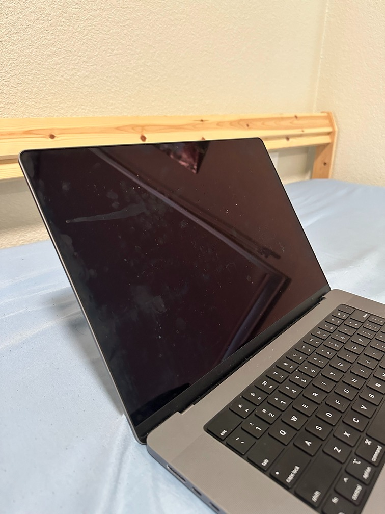
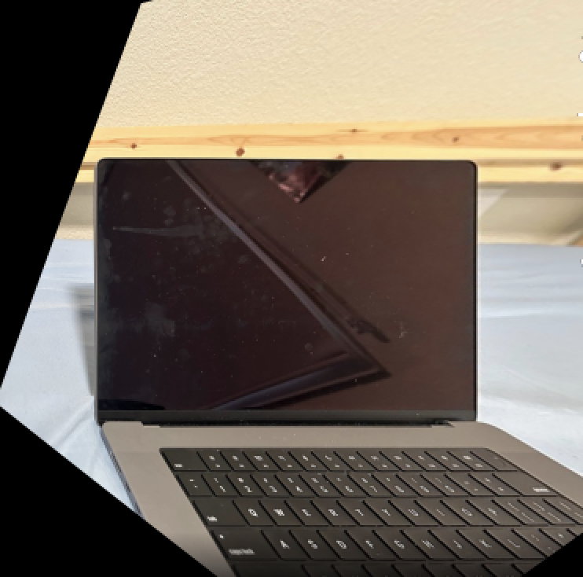

CS 180 Project 4a: Colorizing the Prokudin-Gorskii photo collection
By Shreyas Prasanna
The goal of this assignment is to get our hands dirty in different aspects of image warping with a “cool” application -- image mosaicing. We will take two or more photographs and create an image mosaic by registering, projective warping, resampling, and compositing them. Along the way, we will learn how to compute homographies, and how to use them to warp images.
Shoot the Pictures
I took a couple of picture sets (2 or 3 imagees) for a few indoor and outdoor scenes that follow the below "rules":
- Projective Transformation: The images should appear to be taken from a single viewpoint, but with a slight rotation or shift between them. This is the essence of projective transformation, where the perspective changes slightly but objects in the scene remain recognizable.
- Sufficient Overlap: Each photo should overlap with the adjacent ones by 40% to 70%. This is crucial for stitching the images together later, as you’ll need common points or features in both images to compute the homography.
- Minimal Distortion: If the images don’t have significant lens distortion (like fisheye or extreme barrel distortion), then they should be fine for your project. If there is distortion, it can complicate the image warping and blending process.
- Consistent Lighting and Scene Stability: If the photos were taken at the same time or under similar lighting, and there’s no significant movement in the scene (e.g., trees swaying too much, water flowing rapidly), then they will work well for image mosaicing.
Recover Homographies
Matrix A Construction
For each correspondence (x1, y1) ↔ (x2, y2),
two rows are added to the matrix A, forming the system:
[
-x1, -y1, -1, 0, 0, 0, x1x2, y1x2, x2
0, 0, 0, -x1, -y1, -1, x1y2, y1y2, y2
]
Solving the System
We use Singular Value Decomposition (SVD) to solve the homogeneous system Ah = 0.
The solution vector h (which gives us the homography matrix H) is found from the last row of VT.
Normalizing the Homography Matrix
After computing the homography matrix H, it is normalized by dividing by the bottom-right value H[2,2]
to ensure that the scaling factor is 1.
Warp the Images
Corner Transformation
The corners of the input image are transformed using the homography matrix H to predict the bounding box of the warped image.
Meshgrid for Output Coordinates
We create a grid of output coordinates that span the predicted bounding box. These are the coordinates where we want to compute pixel values for the warped image.
Inverse Warp
We apply the inverse homography H-1 to map each pixel in the output image back to a coordinate in the input image.
Interpolation
We use scipy.interpolate.griddata to interpolate pixel values at the computed coordinates. This avoids aliasing by smoothly sampling the input image.
Alpha Mask
Pixels that are outside the valid bounds of the input image are marked using an alpha mask or set to zero.
Image Rectification
For the process of image rectification, I took a couple of images of rectangular objects, such as a laptop and TV. After which I took the following steps:
Steps for Image Rectification
Define Point Correspondences
- You need to identify four points in your input image (e.g., the corners of a rectangular object like a painting or monitor).
- These points will be stored in
im1_pts, representing their coordinates in the image.
- For
im2_pts, you define the desired position of these points, typically corresponding to the four corners of a perfect rectangle (e.g., [0, 0], [1, 0], [1, 1], [0, 1]).
Compute Homography
- Using the
computeH function that you already developed, compute the homography matrix that maps the points in im1_pts to im2_pts.
Warp the Image
- Use the
warpImage function to apply the computed homography and warp the input image so that the rectangular object is rectified.
Visualize the Result
- Display the original and rectified images to verify that the transformation worked as expected.
Below are the results of image rectification
Result-1


Blend the images into a mosaic
The approach to create a seamless mosaic between two images involves the following steps:
- Identify Corresponding Points: Manually select common points in both images, such as corners or edges of objects, which will be used to align the images.
- Calculate Homography Matrix: Using the corresponding points, a homography matrix is computed to map points from the left image to the right (root) image, transforming the perspective.
- Warp the Left Image: The left image is warped based on the homography matrix so that it aligns with the root image, making their perspectives match.
- Blend the Images: A blending technique (alpha blending) is applied in the overlapping regions of the two images to ensure a smooth transition without visible seams.
- Construct the Mosaic: The non-overlapping regions from the left image are combined with the rest of the root image, and the result is a seamless mosaic that includes both images.
Key Concepts
- Homography: Transforms the perspective of one image to match another.
- Warping: Adjusts the left image to align with the root image.
- Blending: Ensures smooth transitions between overlapping parts of the images.
This method results in a combined mosaic that naturally transitions from one image to the other, with aligned perspectives and blended overlapping areas.
Below are the results